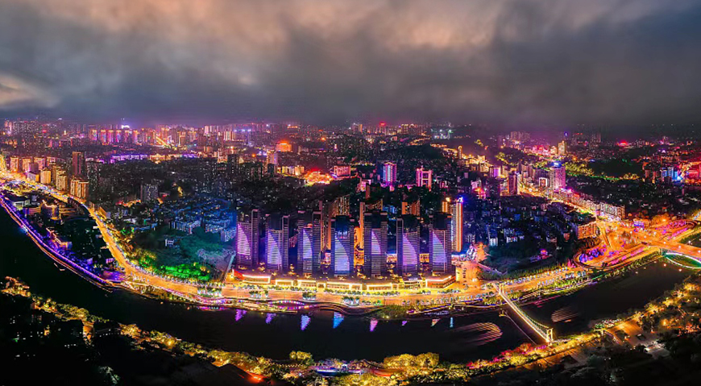

在千百年来广布年节灯会的神州大地上,有一座川南小城同样因彩灯而闻名世界。自贡彩灯,素有"天下第一灯"的美称。这座全国历史文化名城,以"恐龙之乡"、"南国灯城"、"千年盐都"名播四海。

自贡灯会,源远流长。早在在唐宋时代,自贡就有了新年赏灯的习俗,明清时期发展为各种会节。由于盐业的兴盛,盐商多喜以组合华丽的巨型灯组争名斗富,因而当地的放灯仪式往往成为吸引各地游人的独特景观。据荣县《县志》载:"正月人日之后,各祠庙皆燃火树,各门首皆点红灯。新年灯火甚盛……一城数亭,一亭各式,其高数重,构栋雕镂,嵌灯如星,一亭燃四五百灯,辉丽万有,西人来观亦欣然,京邑所不及也。"
而今,观灯已经不是春节的专属活动。在自贡,将建成一座集文化创意设计、彩灯制作、彩灯会展、彩灯主题公园、红色旅游等为一体的彩灯全产业链基地、国家5A级景区和大型国际文化艺术旅游综合项目。在这里,各种形制、各种题材的彩灯都可游可赏。
据悉,该项目计划总投资275亿元,占地9773亩,由国内一线文旅规划设计品牌华采堂负责整个项目的策划、综合规划设计、招商等工作,将成为中国首个夜游公园,国内夜景旅游网红地标。整个项目将由一核两带三轴四区组成。一核为中华彩灯集览核,两带为水街娱乐体验带、沿河休闲生态带,三轴为文明交辉文化轴、万家灯火文化轴、盐都盛世文化轴,四区为彩灯娱乐体验区、盐灯商业休闲区、彩灯产业集聚区、红色文化传承区,它们共同编织出自贡城市新形象和文化新地标的卓尔不凡。
整个项目将由一核两带三轴四区组成。一核为中华彩灯集览核,两带为水街娱乐体验带、沿河休闲生态带,三轴为文明交辉文化轴、万家灯火文化轴、盐都盛世文化轴,四区为彩灯娱乐体验区、盐灯商业休闲区、彩灯产业集聚区、红色文化传承区,它们共同编织出自贡城市新形象和文化新地标的卓尔不凡。